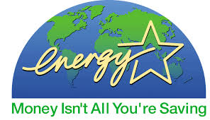

Turn the tap off when you are brushing your teeth or shaving rather than leaving the tap on.
Wash vegetables and rinse dishes in a plugged sink, not under a running tap.
Use a microwave, steam or pressure cooker to cook vegetables. This retains more flavour and uses less water than boiling.
Wait for a full load before you wash your clothes or the dishes.
Prevent taps from leaking by turning them off tightly and replacing washers as soon as they begin to leak. You can also install flow restrictors or tap aerators to reduce your tap's water use.
Install a water efficient showerhead. The shower can be one of the biggest uses of water in your home, and easy to reduce using a water efficient showerhead.
With the correct planning, plant selection, soil improvement and mulching you can create a garden that requires minimal water and maintenance
Things you can do in the future
Buy water efficient appliances
Install a water efficient toilet
Instal a rainwater tank.
Install a greywater system
Energy saving

Switch off lights, appliances and equipment (at the powerpoint) when they're not needed
Install energy-efficient compact light globes
Insulate, draught-seal and shade windows to reduce your homes heating and cooling needs
Cut hot water usage by installing water-efficient showerheads, taking shorter showers and using cold water when washing clothes